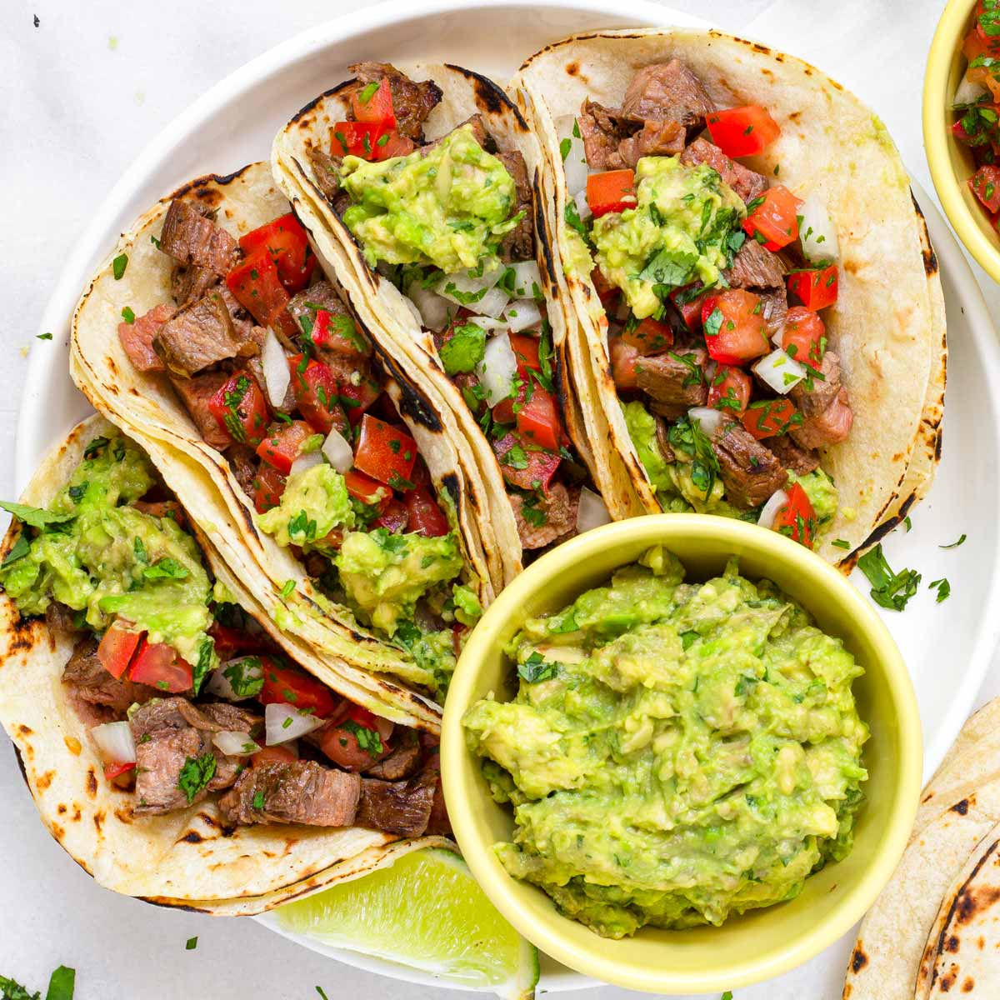
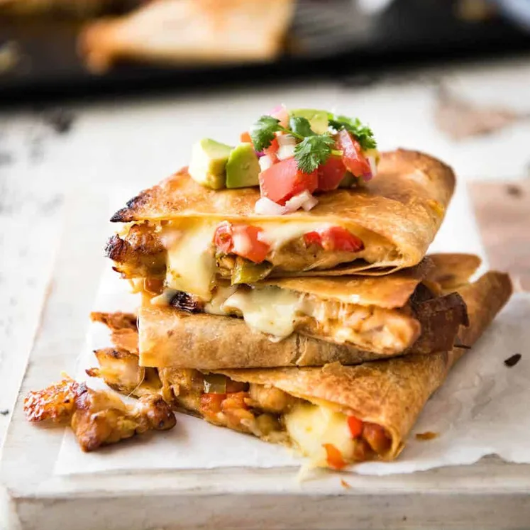
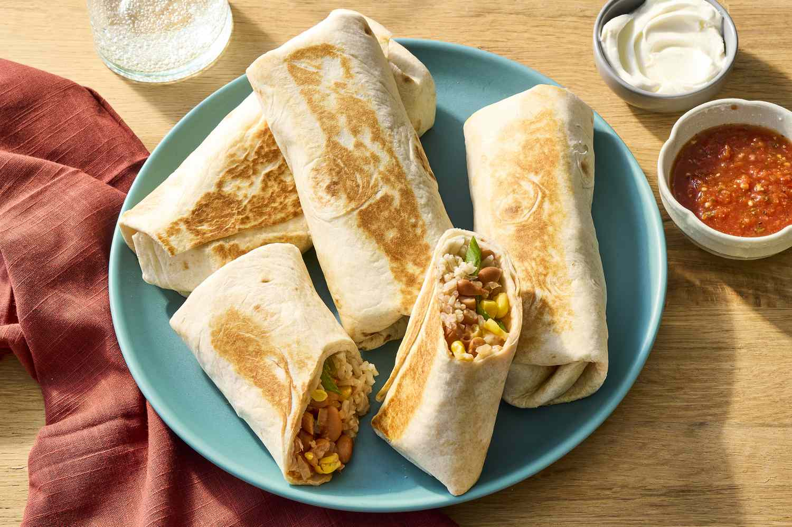

mex
ican
cui
sine
mexico is known
for its delicious,exotic plates that have unique distinct flavour
that you cant find anywhere
, it's plates are a fusion between the
originality and european cooking especially spanish,
and today we're gladly
representing this country's cuisine and giving
you more information about it, Mexican food is a
vibrant and flavorful cuisine known for its rich use of spices,
fresh ingredients, and bold combinations. Staples like corn,
beans, and chili peppers form the foundation of many dishes,
while favorites such as tacos, enchiladas, tamales, and guacamole
showcase the country's diverse culinary heritage
Each region in Mexico offers its own unique specialties, from the
mole sauces of Oaxaca to the seafood of Baja California.
Mexican food is not just about taste—it's deeply rooted in culture and tradition,
often enjoyed with family and friends in festive settings
list of mexico's most popular dishes:

- Tacos:
- Tacos are one of the most iconic dishes in Mexican cuisine.
They consist of a soft or crispy tortilla
filled with a variety of ingredients such as beef, chicken, pork, or vegetables.
Tacos are often topped with fresh salsa, onions, cilantro,
cheese, and a squeeze of lime for added flavor.
They are highly customizable, making them a favorite for casual meals, parties, or street food.
Whether served with a spicy kick or kept mild,
tacos offer a delicious and satisfying experience for everyone.
- Grilled beef, chicken, pork, or vegetables
- Fresh salsa
- Chopped onions
- Cilantro
- Grated cheese
- Lime wedges

- casadeillas
- Quesadillas are a popular Mexican
dish known for their simplicity and delicious flavor.
Traditionally made using corn or flour tortillas,
quesadillas are filled with cheese and often include additional ingredients
like grilled chicken, beef, vegetables, or beans. The tortilla is folded
over and cooked on a griddle
until the cheese melts
and the outside becomes golden and crispy. They are usually served with sides like salsa,
guacamole, or sour cream. Quesadillas are loved for their versatility—you can customize
them with different fillings to suit your taste, making them a perfect option for a quick
snack or a satisfying meal.
- Shredded cheese (e.g., cheddar or Oaxaca)
- Grilled chicken or beef (optional)
- Sautéed vegetables (e.g., peppers, onions)
- Beans (optional)
- Butter or oil (for cooking)
- Sides: salsa, guacamole, or sour cream

- Burritos:
- Burritos are a classic Mexican dish that combines
a variety of flavorful ingredients
wrapped in a large flour tortilla. They typically include fillings such as
seasoned rice, beans, meat (like beef, chicken, or pork), cheese, and vegetables.
Some versions also add guacamole, sour cream, or salsa for extra taste. The tortilla is
folded tightly around the fillings, making burritos easy to eat on the go.
Burritos are especially
popular because they’re hearty, customizable, and can be made with a wide
range of ingredients,
making them perfect for breakfast, lunch, or dinner.
- Large flour tortilla
- Seasoned rice
- Beans (black or pinto)
- Grilled meat (beef, chicken, or pork)
- Shredded cheese
- Vegetables (lettuce, tomatoes, onions)
- Guacamole or sliced avocado
- Sour cream
- Salsa or hot sauce